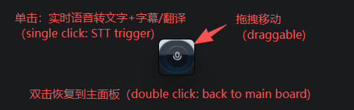
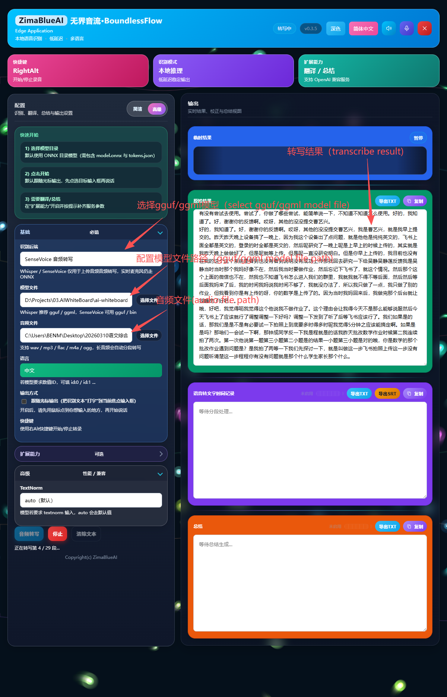

Real-time Speech-to-Text (STT) & Model Selection
The core feature of Boundless Flow is real-time Speech-to-Text (STT) based on local models. It accurately and rapidly converts your speech into text and supports multiple output methods.

Real-time STT Introduction
Boundless Flow supports both SenseVoice ONNX and FunASR for local real-time STT. Both paths provide interim streaming output and final sentence-level output, so text can appear while you are speaking.
STT paths: real-time microphone STT supports SenseVoice ONNX and FunASR. The native-stt path is focused on offline file transcription with native Whisper / SenseVoice backends.
Output Methods
In the settings, you can choose different output methods:
- Cursor-following Injection (Recommended): Speak as you write. The recognized text is directly injected into your current cursor position. After enabling this, please click where you want to type (e.g., Word, web input box) before you start speaking.
- Real-time Output: Displays the recognized text in real-time within the application interface.
- Final Auto-Return: Automatically outputs the final result and adds a line break after you finish a sentence.
How to Start Real-time STT
Configure Model
Ensure you have correctly configured the model directory (see below).
Start Recording
Method 1: Click the "Start Recording" button on the main interface.
Method 2: Press the Right Alt key (RightAlt) on your keyboard from any screen.
Speak and Stop
Start speaking! You will see the recognized text appear in real-time. Press the shortcut again or click the stop button to end the recording.
Selecting and Configuring Different Models
For the speech recognition feature to work, a simple model configuration is required:
Select Backend and Configure Model Directory
- Open the main application interface and go to Settings.
- Select the STT backend you want to use (ONNX or FunASR).
- Locate Model Directory and point it to the corresponding model folder.
Recommended Model Download (ModelScope)
Boundless Flow uses a local SenseVoice ONNX model by default. Recommended download via ModelScope (see ModelScope docs; beginner steps: Appendix A):
modelscope download --model iic/SenseVoiceSmall --local_dir ./SenseVoiceSmallAfter downloading, set Model Directory to the download folder (e.g., ./SenseVoiceSmall or an absolute Windows path).
If you choose the FunASR backend, download the FunASR-Nano model and set Model Directory to that folder:
modelscope download --model FunAudioLLM/Fun-ASR-Nano-2512 --local_dir ./Fun-ASR-Nano-2512Note: ONNX backend requires files such as model.onnx and tokens.json. FunASR backend requires the complete Fun-ASR-Nano-2512 model directory (for example: model.pt, config.yaml, and tokenizer assets).
Additional Models for Speaker Diarization
If you want real-time STT to separate different speakers automatically, you need an extra pair of sherpa-onnx diarization models in addition to the main STT model. These models work alongside SenseVoice / FunASR; they do not replace them.
- segmentation.onnx: splits the audio timeline into speaker turns.
- embedding.onnx: extracts speaker embeddings used to cluster and separate
Speaker_1 / Speaker_2 / Speaker_3.
Recommended directory layout:
F:\Projects\03.AIWhiteBoard\ai-whiteboard-next\voice\speaker-diarization\
segmentation.onnx
embedding.onnxThen configure these fields in the app:
- Speaker Segmentation Model: point to
segmentation.onnxor the containing directory - Speaker Embedding Model: point to
embedding.onnxor the containing directory
Recommended downloads:
- Segmentation model:
sherpa-onnx-pyannote-segmentation-3-0 - Embedding model:
3dspeaker_speech_eres2net_base_sv_zh-cn_3dspeaker_16k.onnx - Official guide: sherpa-onnx speaker diarization models
Important: SenseVoiceSmall handles real-time transcription plus emotion/language/event tags, while Fun-ASR-Nano-2512 is used for the FunASR real-time ASR path. Neither one can directly replace segmentation.onnx and embedding.onnx for speaker diarization.
Advanced STT Settings
- Frame Interval (ms): Determines the real-time responsiveness of STT. A setting of
20ms(near real-time) is recommended. A smaller value means faster text display but higher CPU usage. - Language: Force a specific language for recognition (e.g., English, Chinese, Japanese). Selecting Auto is recommended to let the AI decide.
- TextNorm: Text normalization processing. Keeping it at auto (default) is recommended.
native-stt Offline File Transcription
The upgraded native-stt path adds an offline transcription workflow alongside real-time microphone STT. It is intended for longer recordings, archived audio, meeting replays, and local file-based transcription.

Best-fit Scenarios and Behavior
- Audio files only: this path is for uploaded/local audio files. For live microphone STT, use ONNX or FunASR backend in real-time mode.
- Native backends: switch between
WhisperandSenseVoicebased on the model you want to run. - Safer long-audio handling: long files are processed in chunks and appended incrementally to the Raw Result area.
- Interruptible: you can stop an in-progress transcription with the stop button.
- CUDA preferred when available: if the machine has a usable CUDA environment, native-stt will try GPU acceleration first.
How to Configure native-stt
- In the STT panel, switch the backend to Whisper or SenseVoice.
- Select the corresponding model file or model path.
- Select the audio file you want to transcribe.
- Click Transcribe File; partial and final results will be appended to the Raw Result area.
Model and Format Notes
- Whisper: commonly used with
.bin,.ggml, or.ggufmodel files. - SenseVoice: commonly used with
.binor.ggufmodel files. - Language: in most cases,
autois recommended; manually locking language may improve stability for some files.
Note: native-stt is currently positioned as an offline file-transcription feature, not a live microphone subtitle path. For live speak-and-see workflows, use the real-time ONNX or FunASR pipeline.
Copyright(c) ZimaBlueAI
齐码蓝智能（大理市 ）有限责任公司